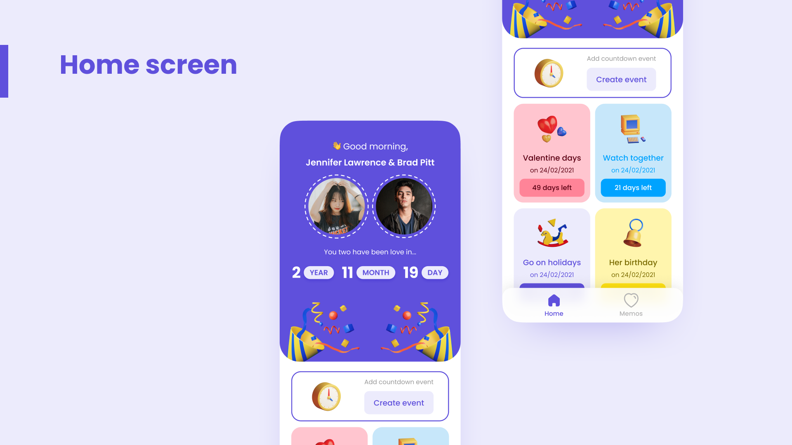
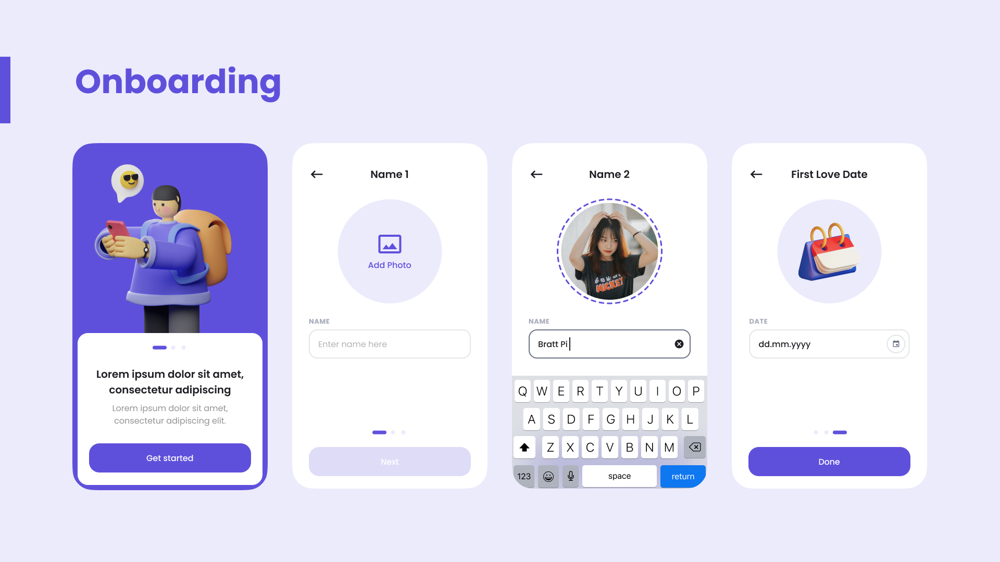
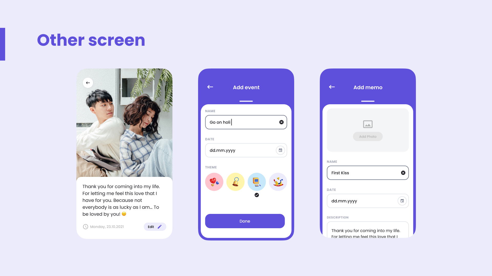

Love Note: A Couples App for Anniversaries and Memories
A self-initiated concept, designed in Figma and never built. One screen counts the days you have already spent together, the other keeps the photos. Everything I could have added, I left out on purpose.

Project Overview
Love Note is a phone app for two people. It shows how long they have been together, counts down to the dates that matter next, and keeps their photos in one place. That is the entire product.
It was my own idea and it exists only in Figma. There is no prototype and no build, and I never put it in front of a real couple. The mockups use placeholder faces and, in the onboarding, placeholder copy that was never written.
So this is a page about design decisions rather than results. What follows is what I chose to put on screen, what I chose to leave off, and why.

The Counter Comes First
The home screen opens on both faces and one line: two years, eleven months, nineteen days. Nothing is above it and nothing shares the space with it.
That number is the reason to open the app at all. The countdowns and the photos are useful, but they are not why someone installs a thing like this. If the counter were third on the screen, under a list of events, the app would be a calendar that happens to know your anniversary.
Putting it first also decides the tone of everything under it. The greeting is by time of day, the two photos sit in dashed rings like something pinned up, and the confetti sits at the bottom of the card. The utility starts below that line, not above it.

Three Facts, No Skip
Onboarding is four screens and asks for three things: your name and photo, your partner's name and photo, and the date you started. There is no skip on any of them.
The app is empty without all three. No date means no counter, which means the home screen has nothing on it worth looking at. No photos means the greeting has two grey circles in it. Every screen I had designed depended on information only the person could give me, so asking for it up front was not a choice about onboarding, it was a consequence of the home screen.
The order matters too. The date is asked last, on its own screen, because it is the one thing someone might have to stop and think about.
Events You Can Scan
Countdowns are coloured tiles, two to a row, each with a big 3D icon, a name, a date and a pill saying how many days are left. Creating one lets you pick which icon it gets.
You scan these, you do not read them. There are only ever a handful, and a colour and a picture identify one faster than its title does. Once you know Valentine's is the pink card with the hearts, you stop reading the words on it entirely.
A list of rows with dates on the right would hold more events in the same space. It would also have looked like every reminders app on the phone, and it would have made finding one a matter of reading rather than glancing.

Two Tabs and No More
The tab bar has Home and Memos in it. There is no profile tab, no settings tab and no discover tab.
A third tab would have been padding. The app does two things, and the moment I add a place to put a fourth thing I have to invent a fourth thing to put there. The names and the start date already get set in onboarding, and editing them is rare enough that it does not need permanent space at the bottom of every screen.
The two forms behind those tabs are built the same way for the same reason. Add an event and add a memo both ask for a name and a date, then one extra field: an icon for the event, a photo and a description for the memo. Learn one and you have learned both.
What It Never Got
No couple ever used this. It was never tested, never clicked through and never built, so every decision above is a designer's argument rather than something a person confirmed.
The one I would want to test first is the restraint. Two tabs is a defensible position and it is also the position most likely to be wrong, because an app you open for a number you already know is an app that is easy to stop opening. Whether the counter is enough to bring someone back on a Tuesday is exactly the sort of thing you cannot settle by drawing it.